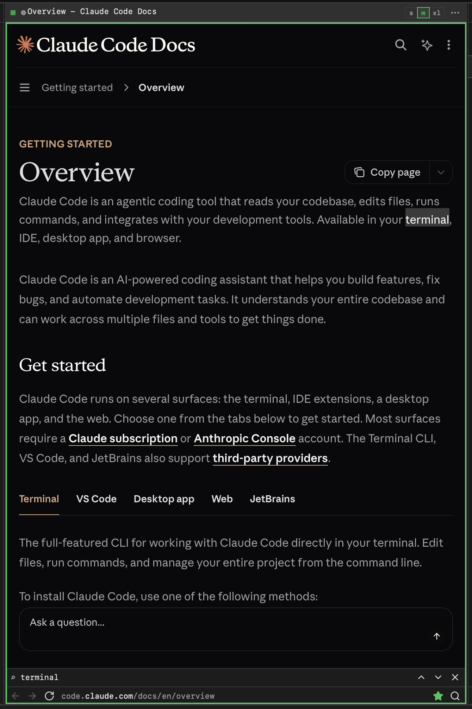

01
Lanes, not windows.
A terminal and a web page are peers. Each is a portrait column on one horizontal strip; wide content scrolls inside the lane, and the lane never widens past its max. Lanes never overlap.
Three sizes, s | m | xl, in every lane's menu; ⌘\ cycles them. ⌘D splits a pane to the right, the way iTerm does. Drag a lane by its header onto any edge of another, or pick a pane up and drop it in a different column.
